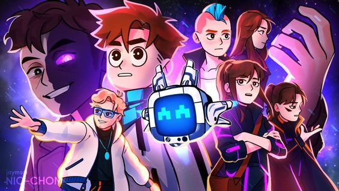

Этот сайт посвящен сезонам Lololoshka

Серия 1
С самого начала мы наблюдаем за метаниями учёных, которые приходят к решению к переходу к некому плану "Дельта". Они проводят эксперименты над определёнными подопытными, но терпят крах после 992 попыток. Лололошку, найденного в лаборатории также оперируют. После герой оказывается в открытом мире рядом с метеоритом, с неким "Неактивными модулем П.Е.Р.С.И.К." в инвентаре.Через некоторое время после начала путешествия герой получает уведомление о том, что в некой зоне "А" спустя 30 минут будут проведены профилактические работы, а все жители, не перешедшие в зону ожидания будут уничтожены. Он не успевает покинуть указанную зону и погибает.
Серия 2
В начале серии героя несколько раз ударяет током, оповещая об отсутствии средств идентификации. Позже, во время путешествия он встречает людей, женщину с дочкой. Девочка спрашивает о его алгоритме, но мама поспешно уводит ее, украдкой говоря ей, что Лололошка — девиант и не из города.Через некоторое время он получает уведомление о том, что является незарегистрированным автономным организмом класса R-700. Ему говорят оставаться на месте, а так же то, что "отряд ликвидаторов уже в пути". Лололошка убегает с места, на котором позже появляется и исчезает внушительный луч.
Серия 3
Лололошка получает уведомление о получении неизвестного нейропротокола. Ключом к дешифрации стало слово DALIVARIKA (Даливарика так же является миром из Игры Бога). Сообщение датируется 17.04.2031. Начинается дешифрация письма.Чуть позже герою сообщают, что он "задает запрос на реконструкцию событий", которая не является возможной из-за ошибки и отсутствии детали Гамма.После завершения дешифрации мы получаем сообщение.
Серия 4
Герой получает письмо от империи с оповещением о раздаче вещей в Альт-сити. Он направляется на остановку и приезжает в город. В нём он получает уведомление о незарегистрированном приборе слежения, источником которого является RATARETO. Почти сразу же он получает сообщение.Лололошка покидает город.
Серия 5
Герой получает оповещение империи и направляется в город.Там его встречает полиция и задерживает из-за отсутствия документов. Чтобы избежать возможных неприятностей от начальства (первое упоминание Войда), его решают осмотреть и зарегистрировать.Лололошку отводят к доктору. Тот удивляется его возрасту и словно ребенку говорит герою о том, как значима Империя и о том, что граждане обязаны делать для нее все возможное.В том же здании он видит абсолютно пассивных жителей, что не могут даже связно говорить.Позднее он получает письмо.
7 серия
В назначенное время он заходит по координатам в здание. там он впервые встречает Кейт и Радана. Последний показывает к нему открытое недоверие и агрессивность. Имя и одежда героя кажутся им странными. Выясняется, что RATARETO — это Кейт. Она рассказывает ему о своем "близком" и о недоверии к Империи. Они выясняют необходимость в установки аккумулятора в неактивный модуль П.Е.Р.С.И.К.Радан уходит, попутно осыпая Лололошку угрозами. Кейт пытается обнадёжить его.Герой возвращается домой.
8 серия
К месту жительства Лололошки приходят полицейский, говоря, что ему необходимо получить разрешение на модернизацию территории в течение 24 часов.Он приходит к Кейт и рассказывает о произошедшем. Она предлагает ему подделать документы и спускается с ним в подполье. Девушка знакомит его с Рэем, доктором, прося его помочь. Тогда Лололошка получает документы с именем Дейва. теперь это его официальное имя для Империи. После этого он разговаривает с сумасшедшим. Тот говорит ему что-то о неком центре и еще несколько странных вещей. После он даёт ему яйцо дракона, наставляя заботиться о нем.Кейт рассказывает ему базовые вещи об империи, когда к ним вбегает радан под звуки сирен. Все спешно покидают дом.Дома Лололошка снова встречает полицейского, и тот подтверждает получение необходимого разрешения
9 серия
Рядом со своим домом Лололошка находит лежащее тело Майка. После обнаружения их находит Джон, его отец. В отчаянии он обвиняет героя, называя его багряным невидимкой и угрожая убить его. Лололошку вырубают.Герой приходит в себя в незнакомом доме вместе с Джоном и Ванессой. Первый угрожает ему, но женщина отговаривает его от принятия поспешных решения, несмотря на горе.Они испытывают на герое "детектор лжи". После этого выясняется его невиновность. Как только Лололошка покидает дом, он слышит, как Джон говорит своей, что он может помочь с поисками багрового невидимки.
10 серия
Герой создает свою колонию. Первым ее жителем становится Лионель.Затем Лололошка направляется в дом Кейт, где слышит спор ее с Раданом. Последний считает виновником приезда полиции Лололошку. Затем ему предоставляют аккумулятор. Он активирует модуль П.Е.Р.С.И.К. Мы впервые встречаем Райю-Прайм. Она представляется искусственным интеллектом и взаимодействует со всеми присутствующими. Ее память была полностью утеряна. Дома Райя упоминает, что у нее есть некая миссия, но она не может вспомнить подробностей. Лололошке приходит сообщение
11 серия
Райя говорит, что видела воспоминания Лололошки о Ванессе и Джоне. Она предлагает ему сходить к ним.Герой направляется к ним домой. Там ему рассказывают о убийце, багровом невидимке, что расправился со всеми жителями их поселения, кроме них самих. Полиция ничего с этим не делала. Они просят его о помощи. Герой соглашается.В поселении Лололошке приходит сообщение, вместе с устройством, перемещающим к рабочему месту его нового алгоритма: «Земледелие». Он получает возможность заработать рабочие часы.